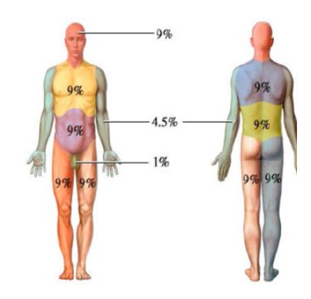

Quemaduras
Antes de continuar vea la nota sobre el uso de esta Guía.
Clasificación:
Puede ser causada por fuego, objetos calientes, choque eléctrico, exposición solar o sustancias químicas (ácidos, abrasivos, etc.)
Las quemaduras se clasifican según los daños causados a la piel:
Primeros Auxilios:
En quemaduras de primer grado aplicar agua fría al menos durante 5 minutos para bajar la temperatura de los tejidos.Si no cuentas agua corriente puedes aplicar una compresa fría con una toalla o trapo limpio mojado. No aplicar ningún otro remedio casero. Después de aplicar el agua se puede vendar con una gaza esteril sin apretar demasiado.
- No aplicar ningún remedio casero o ungüento a menos que un doctor se lo indique.
- No aplicar hielo.
- No reventar las ampollas, es un medio que usar el cuerpo para bajar la temperatura.
- Si se ha quemado en un dedo con anillo, trate de sacarlo antes de que se inflame el dedo.
En quemaduras de segundo o tercer grado no seguir las medidas anteriores. Llamar inmediatamente a los servicios de emergencia (911). Revisar el estado de la víctima, que su respiración sea regular, que no sufra hemorragia; evaluar su estado de conciencia. En cada caso seguir las medidas necesarias. No aplicar magnetos. Esperar a que acudan los servicios de emergencia.
Valoración:
También es importante determinar el porcentaje de piel lesionada, para lo cual se siguen los siguientes parámetros:

Las quemaduras requieren atención médica de urgencia en caso de: quemaduras de segundo grado que afecten al más del 20% del cuerpo (10% en niños). Quemaduras de tercer grado que afecten a más del 10% del cuerpo (5% en niños). También cuando afecten zonas de la cara, genitales, manos, pies o articulaciones deben atenderse por personal médico. Especialmente peligrosas son las quemaduras de las vías respiratorias a causa de inhalación de humo, vapores, gases muy calientes o sustancias tóxicas, deberá acudirse inmediatamente a una unidad médica ya que rápidamente pueden comprometer la capacidad ventilatoria.
A todas las consideraciones anteriores hay que añadir otros factores como la condición general de la víctima: embarazados, niños, diabéticos, inmunodeprimidos, pacientes de cáncer... todos ellos presentan mayor riesgo.
Prevención
Las quemaduras arrojan miles de víctimas anualmente, ya sea por heridas que requieran hospitalización, muchas veces con afectaciones irreversibles; y en otros casos resultando en la muerte. Las quemaduras pueden prevenirse, debemos prestar especial atención en los pequeños, que son quienes están más expuestos a sufrir este tipo de accidentes. Veamos algunas de las medidas preventivas: